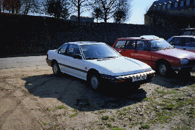

Homepage

Oh, hey there. You found my oldschool plain Website. See the navbar on the top for other pages.
There is not much else to see here on this page, so enjoy this old picture of my grandparents' car.

My grandparents' Honda
Update 27-08-2024:
I may have moved this page to Github now. Old Webserver was a bit sluggish at times.